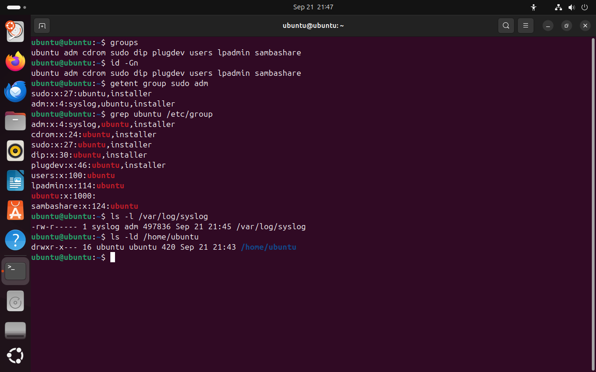

Часть 3 из 7
Группы
В этой части разберём основную и дополнительные группы пользователя, файл /etc/group и то, как членство в группе даёт доступ к файлам.
3.1 Основная и дополнительные группы
Выдавать права каждому пользователю отдельно неудобно: в команде из десяти разработчиков пришлось бы десять раз повторять одни и те же настройки. Поэтому пользователей объединяют в группы и права выдают группе. Новый участник команды получает доступ, как только его добавят в группу.
У каждого пользователя одна основная группа и сколько угодно дополнительных. Основная группа записана номером в четвёртом поле /etc/passwd. Файлы, которые создаёт пользователь, получают эту группу. В Ubuntu для каждого пользователя создаётся личная основная группа с тем же именем: у ubuntu это группа ubuntu. Дополнительные группы перечислены в файле /etc/group.
Строка /etc/group состоит из четырёх полей: имя группы, пароль группы (x, пароли групп практически не используются), GID и список участников через запятую. В этом списке указаны только те, для кого группа дополнительная. Поэтому в строке личной группы ubuntu:x:1000: участников нет: основную группу пользователь получает через поле GID в /etc/passwd.
| Группа | Зачем нужна |
|---|---|
sudo | участники выполняют команды от имени root через sudo |
adm | участники читают системные журналы в /var/log |
cdrom, plugdev | доступ к оптическому приводу и съёмным устройствам |
users | общая группа обычных пользователей |
Команда groups выводит имена групп пользователя, id -Gn — то же самое, но её удобнее применять в скриптах вместе с другими ключами id. Команда getent group выводит строки групп из базы.
groups# группы текущего пользователячто делает
Что делает команда. Выводит имена групп текущего пользователя; первая — основная.
По частям:
groups- вывести группы пользователя
id -Gn# то же самое через idчто делает
Что делает команда. Выводит имена всех групп текущего пользователя.
По частям:
id- вывести номера пользователя и его группы
-G- вывести все группы
-n- имена вместо номеров
getent group sudo adm# строки двух группчто делает
Что делает команда. Выводит строки групп sudo и adm из базы групп.
По частям:
getent- получить запись из системной базы данных
group- база групп
sudo- какая запись
adm- какая запись
grep ubuntu /etc/group# все группы, где встречается ubuntuчто делает
Что делает команда. Выводит строки /etc/group, в которых встречается ubuntu.
По частям:
grep- отобрать строки, в которых есть образец
ubuntu- образец
/etc/group- в каком файле искать (абсолютный путь)
- 1первая в списке — основная группа ubuntu
- 2остальные — дополнительные группы
- 3имя группы
- 4пароль группы не используется
- 5GID группы
- 6участники через запятую
- 7личная группа: участников в строке нет
{kind=link}

Весь снимок ↗Группы пользователя ubuntu и строки файла /etc/group.
Что показывает снимок. У ubuntu основная группа ubuntu и восемь дополнительных; в строке sudo среди участников есть ubuntu; личная группа ubuntu участников не перечисляет.
Где это пригодится. Когда пользователю нужен доступ к устройству, журналам или правам администратора, его добавляют в соответствующую группу; права самих файлов при этом не меняют.
3.2 Группа даёт доступ к файлам
У каждого файла есть владелец и группа. Права записаны тремя тройками: первая действует для владельца, вторая — для участников группы файла, третья — для всех остальных. Система проверяет тройки по порядку и применяет первую подходящую: если процесс принадлежит владельцу — права владельца; если среди групп процесса есть группа файла — права группы; иначе — права остальных.
Системный журнал /var/log/syslog принадлежит служебной записи syslog и группе adm, права rw-r-----. Владелец пишет в журнал, участники группы adm читают его, остальным доступ закрыт. Пользователь ubuntu состоит в adm, поэтому может читать системные журналы без sudo.
Домашний каталог /home/ubuntu имеет права rwxr-x---. Для каталога r означает право читать список файлов, x — право входить в каталог, w — право создавать и удалять файлы в нём. Остальные пользователи не могут даже открыть каталог, поэтому личные файлы одного пользователя закрыты от другого.
| Право | Для файла | Для каталога |
|---|---|---|
r | читать содержимое | выводить список имён |
w | изменять содержимое | создавать, удалять и переименовывать файлы внутри |
x | запускать как программу | входить в каталог и обращаться к файлам внутри |
ls -l /var/log/syslog# журнал: группа admчто делает
Что делает команда. Выводит владельца, группу и права системного журнала.
По частям:
ls- вывести содержимое каталога
-l- подробный список: права, владелец, группа, размер
/var/log/syslog- что показать (абсолютный путь)
ls -ld /home/ubuntu# домашний каталогчто делает
Что делает команда. Выводит права самого домашнего каталога ubuntu, не заходя внутрь.
По частям:
ls- вывести содержимое каталога
-l- подробный список: права, владелец, группа, размер
-d- показать сам каталог, а не его содержимое
/home/ubuntu- что показать (абсолютный путь)
- 1владелец rw-, группа r--, остальные ---
- 2владелец — служебная запись syslog
- 3группа adm: её участники читают журнал
- 4домашний каталог: группа читает, остальные — нет
Права на системный журнал и на домашний каталог.
Что показывает снимок. Журнал syslog принадлежит syslog и группе adm и закрыт для остальных; домашний каталог ubuntu закрыт для остальных пользователей.
Где это пригодится. Чтобы разработчик читал журналы сервера без sudo, его добавляют в группу adm.
Итоги части 3
- Группа — набор учётных записей; права, выданные группе, получают все участники.
- Основная группа записана в
/etc/passwd, дополнительные — в/etc/group. - Строка
/etc/group: имя, пароль группы, GID, участники. - Права проверяются по первой подходящей тройке: владелец, группа, остальные.
В отчётСнимок groups и getent group sudo с объяснением, где основная группа, а где дополнительные.